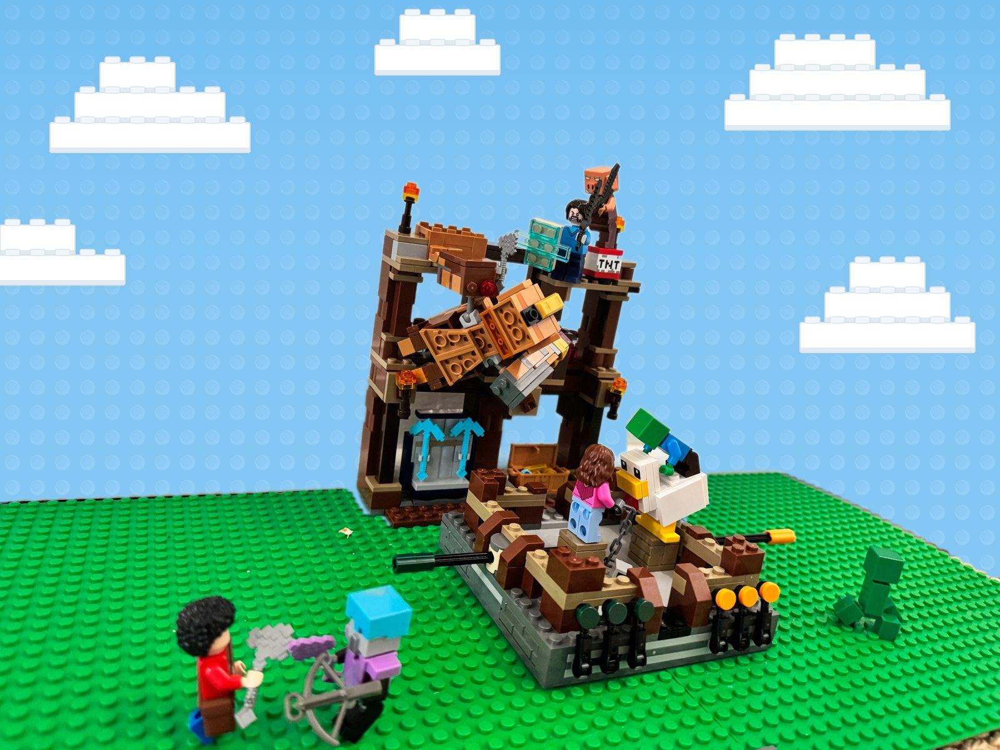

My drawings


Lego builds

A Lego build goes here
A Lego build goes here
Stories
A story I made up goes here
A story I made up goes here
Adventures
A photo from an adventure goes here
A photo from an adventure goes here
A photo from an adventure goes here
Made by Teddy
My next movie or game goes here